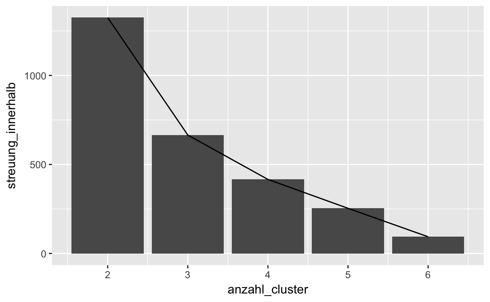

Kapitel 14 Vertiefung: Clusteranalyse


Benötigte Pakte:
library(tidyverse)
library(cluster)library(broom)Lernziele:
- Das Ziel einer Clusteranalyse erläutern können.
- Das Konzept der euklidischen Abstände verstehen.
- Eine k-Means-Clusteranalyse berechnen und interpretieren können.
14.1 Grundlagen der Clusteranalyse
Das Ziel einer Clusteranalyse ist es, Gruppen von Beobachtungen (d. h. Cluster) zu finden, die innerhalb der Cluster möglichst homogen, zwischen den Clustern möglichst heterogen sind. Um die Ähnlichkeit von Beobachtungen zu bestimmen, können verschiedene Distanzmaße herangezogen werden. Für metrische Merkmale wird z. B. häufig die euklidische Metrik verwendet, d. h., Ähnlichkeit und Distanz werden auf Basis des euklidischen Abstands bestimmt. Aber auch andere Abstände wie “Manhattan” oder “Gower” sind möglich. Letztere haben den Vorteil, dass sie nicht nur für metrische Daten sondern auch für gemischte Variablentypen verwendet werden können. Wir werden uns hier auf den euklidischen Abstand konzentrieren.
14.1.1 Intuitive Darstellung der Clusteranalayse
Betrachten Sie das folgende Streudiagramm (die Daten sind frei erfunden; “simuliert”, sagt der Statistiker). Es stellt den Zusammenhang von Lernzeit (wie viel ein Student für eine Statistikklausur lernt) und dem Klausurerfolg (wie viele Punkte ein Student in der Klausur erzielt) dar. Sehen Sie Muster? Lassen sich Gruppen von Studierenden mit bloßem Auge abgrenzen (Abb. 14.1)?

Abbildung 14.1: Ein Streudiagramm - sehen Sie Gruppen (Cluster) ?
Färben wir das Diagramm mal ein (Abb. 14.2).

Abbildung 14.2: Ein Streudiagramm - mit drei Clustern
Nach dieser “Färbung”, d.h. nach dieser Aufteilung in drei Gruppen, scheint es folgende “Cluster”, “Gruppen” oder “Typen” von Studierenden zu geben:
“Blaue Gruppe”: Fälle dieser Gruppe lernen wenig und haben wenig Erfolg in der Klausur. Tja.
“Rote Gruppe”: Fälle dieser Gruppe lernen viel; der Erfolg ist recht durchwachsen.
“Grüne Gruppe”: Fälle dieser Gruppe lernen mittel viel und erreichen einen vergleichsweise großen Erfolg in der Klausur.
Drei Gruppen scheinen ganz gut zu passen. Wir hätten theoretisch auch mehr oder weniger Gruppen unterteilen können. Die Clusteranalyse gibt keine definitive Anzahl an Gruppen vor; vielmehr gilt es, aus theoretischen und statistischen Überlegungen heraus die richtige Anzahl auszuwählen (dazu gleich noch mehr).
Unterteilen wir zur Illustration den Datensatz einmal in bis zu 9 Cluster (Abbildung 14.3).

Abbildung 14.3: Unterschiedliche Anzahlen von Clustern im Vergleich
Das “X” soll den “Mittelpunkt” des Clusters zeigen. Der Mittelpunkt ist so gewählt, dass die Distanz von jedem Punkt zum Mittelpunkt möglichst kurz ist. Dieser Abstand wird auch “Varianz innerhalb des Clusters” oder kurz “Varianz within” bezeichnet. Natürlich wird diese Varianz within immer kleiner, je größer die Anzahl der Cluster wird.

Abbildung 14.4: Die Summe der Varianz within in Abhängigkeit von der Anzahl von Clustern. Ein Screeplot.
Die vertikale gestrichelte Linie zeigt an, wo die Einsparung an Varianz auf einmal “sprunghaft” weniger wird - just an jedem Knick bei x=3; dieser “Knick” wird auch “Ellbogen” genannt (da sage einer, Statistiker haben keine Phantasie). Man kann jetzt sagen, dass 3 Cluster eine gute Lösung seien, weil mehr Cluster die Varianz innerhalb der Cluster nur noch wenig verringern. Diese Art von Diagramm wird als “Screeplot” bezeichnet. Fertig!
14.1.2 Euklidische Distanz
Aber wie weit liegen zwei Punkte entfernt? Betrachten wir ein Beispiel. Anna und Berta sind zwei Studentinnen, die eine Statistikklausur geschrieben habenschreiben mussten (bedauernswert). Die beiden unterscheiden sich sowohl in Lernzeit als auch in Klausurerfolg. Aber wie sehr unterscheiden sie sich? Wie groß ist der “Abstand” zwischen Anna und Berta (vgl. Abb. 14.5)?

Abbildung 14.5: Distanz zwischen zwei Punkten in der Ebene
Eine Möglichkeit, die Distanz zwischen zwei Punkten in der Ebene (2D) zu bestimmen, ist der Satz des Pythagoras (leise Trompetenfanfare). Generationen von Schülern haben diese Gleichung ähmm… geliebt:
\[c^2 = a^2 + b^2\]
In unserem Beispiel heißt das \(c^2 = 3^2+4^2 = 25\). Folglich ist \(\sqrt{c^2}=\sqrt{25}=5\). Der Abstand oder der Unterschied zwischen Anna und Berta beträgt also 5 - diese Art von “Abstand” nennt man den euklidischen Abstand.
Aber kann man den euklidischen Abstand auch in 3D (Raum) verwenden? Oder gar in Räumen mehr mehr Dimensionen??? Betrachten wir den Versuch, zwei Dreiecke in 3D zu zeichnen. Stellen wir uns vor, zusätzlich zu Lernzeit und Klausurerfolg hätten wir als 3. Merkmal der Studentinnen noch “Statistikliebe” erfasst (Bertas Statistikliebe ist um 2 Punkte höher als Annas).

Abbildung 14.6: Pythagoras in 3D
Sie können sich Punkt \(A\) als Ecke eines Zimmers vorstellen; Punkt \(B\) schwebt dann in der Luft, in einiger Entfernung zu \(A\).
Wieder suchen wir den Abstand zwischen den Punkten \(A\) und \(B\). Wenn wir die Länge \(e\) wüssten, dann hätten wir die Lösung; \(e\) ist der Abstand zwischen \(A\) und \(B\). Im orangenen Dreieck gilt wiederum der Satz von Pythagoras: \(c^2+d^2=e^2\). Wenn wir also \(c\) und \(d\) wüssten, so könnten wir \(e\) berechnen… \(c\) haben wir ja gerade berechnet (5) und \(d\) ist einfach der Unterschied in Statistikliebe zwischen Anna und Berta (2)! Also
\[e^2 = c^2 + d^2\] \[e^2 = 5^2 + 2^2\] \[e^2 = 25 + 4\]
\[e = \sqrt{29} \approx 5.4\]
Ah! Der Unterschied zwischen den beiden Studentinnen beträgt also ~5.4!
Intuitiv gesprochen, “schalten wir mehrere Pythagoras-Sätze hintereinander”.
Der euklidische Abstand berechnet sich mit Pythagoras’ Satz!

Abbildung 14.7: Pythagoras in Reihe geschaltet
Das geht nicht nur für “zwei Dreiecke hintereinander”, sondern der Algebra ist es wurscht, wie viele Dreiecke das sind.
Um den Abstand zweier Objekte mit k Merkmalen zu bestimmen, kann der euklidische Abstand berechnet werden mit. Bei k=3 Merkmalen lautet die Formel dann \(e^2 = a^2 + b^2 + d^2\). Bei mehr als 3 Merkmalen erweitert sich die Formel entsprechend.
Dieser Gedanken ist mächtig! Wir können von allen möglichen Objekten den Unterschied bzw. die (euklidische) Distanz ausrechnen! Betrachten wir drei Professoren, die einschätzen sollten, wir sehr sie bestimmte Filme mögen (1: gar nicht; 10: sehr). Die Filme waren: “Die Sendung mit der Maus”, “Bugs Bunny”, “Rambo Teil 1”, “Vom Winde verweht” und “MacGyver”.
profs <- data_frame(
film1 = c(9, 1, 8),
film2 = c(8, 2, 7),
film3 = c(1, 8, 3),
film4 = c(2, 3, 2),
film5 = c(7, 2, 6)
)Betrachten Sie die Film-Vorlieben der drei Professoren. Gibt es ähnliche Professoren hinsichtlich der Vorlieben? Welche Professoren haben einen größeren “Abstand” in ihren Vorlieben?
Wir könnten einen “fünffachen Pythagoras” zu Rate ziehen. Praktischerweise gibt es aber eine R-Funktion, die uns die Rechnerei abnimmt:
dist(profs)
#> 1 2
#> 2 13.23
#> 3 2.65 10.77Offenbar ist der (euklidische) Abstand zwischen Prof. 1 und 2 groß (13.2); zwischen Prof 2 und 3 auch recht groß (10.8). Aber der Abstand zwischen Prof. 1 und 3 ist relativ klein! Endlich hätten wir diese Frage auch geklärt. Sprechen Sie Ihre Professoren auf deren Filmvorlieben an…
14.1.3 k-Means Clusteranalyse
Beim k-Means Clusterverfahren handelt es sich um eine bestimmte Form von Clusteranalysen; zahlreiche Alternativen existieren, aber die k-Means Clusteranalyse ist recht verbreitet. Im Gegensatz zur z.B. der hierarchischen Clusteranalyse um ein partitionierendes Verfahren. Die Daten werde in \(k\) Cluster aufgeteilt – dabei muss die Anzahl der Cluster im vorhinein feststehen. Ziel ist es, dass die Quadratsumme der Abweichungen der Beobachtungen im Cluster zum Clusterzentrum minimiert wird.
Der Ablauf des Verfahrens ist wie folgt:
- Zufällige Beobachtungen als Clusterzentrum
- Zuordnung der Beobachtungen zum nächsten Clusterzentrum (Ähnlichkeit, z. B. über die euklidische Distanz)
- Neuberechnung der Clusterzentren als Mittelwert der dem Cluster zugeordneten Beobachtungen
Dabei werden die Schritte 2. und 3. solange wiederholt, bis sich keine Änderung der Zuordnung mehr ergibt – oder eine maximale Anzahl an Iterationen erreicht wurde. Aufgrund von (1.) hängt das Ergebnis einer k-Means Clusteranalyse vom Zufall ab. Aus Gründen der Reproduzierbarkeit sollte daher der Zufallszahlengenerator gesetzt werden (mit set.seed). Außerdem bietet es sich an verschiedene Startkonfigurationen zu versuchen. In der Funktion kmeans() erfolgt dies durch die Option nstart =.
14.2 Beispiel für eine einfache Clusteranalyse
Nehmen wir uns noch einmal den Extraversionsdatensatz vor. Kann man die Personen clustern anhand von Ähnlichkeiten wie Facebook-Freunde, Partyfrequenz und Katerhäufigkeit? Probieren wir es aus!
extra <- read.csv("data/extra.csv")Verschaffen Sie sich einen Überblick mit der Funktion glimpse.
14.2.1 Distanzmaße berechnen
Auf Basis der drei metrischen Merkmale (d. h. Alter, Einkommen und Kinder), die wir hier aufs Geratewohl auswählen, ergeben sich für die ersten sechs Beobachtungen folgende Abstände:
extra %>%
dplyr::select(n_facebook_friends, n_hangover, extra_single_item) %>%
head %>%
dist(.)
#> 1 2 3 4 5
#> 2 144.01
#> 3 35.01 109.00
#> 4 51.93 95.19 21.24
#> 5 150.00 6.08 115.00 101.12
#> 6 126.00 270.00 161.00 176.56 276.00Sie können erkennen, dass die Beobachtungen 1 und 3 den kleinsten Abstand haben, während 1 und 5 den größten haben.
Allerdings hängen die Abstände von der Skalierung der Variablen ab (n_facebook_friends streut stärker als extra_single_item). Daher sollten wir die Variablen vor der Analyse zu standardisieren (z. B. über scale()).
Mit der Funktion daisy() aus dem Paket cluster kann man sich auch den Abstand zwischen den Objekten ausgeben lassen. Die Funktion errechnet auch Abstandsmaße, wenn die Objekte aus Variablen mit unterschiedlichen Skalenniveaus bestehen. Allerdings mag daisy Variablen vom Typ chr nicht, daher sollten wir sex zuerst in eine Faktorvariable umwandeln.
extra %>%
dplyr::select(n_facebook_friends, sex, extra_single_item) %>%
mutate(sex = factor(sex)) %>%
head %>%
cluster::daisy(.)14.2.2 kmeans für den Extraversionsdatensatz
Versuchen wir, einige Variablen mit centers = 4 Clustern mithilfe einer kmeans-Clusteranalyse zu clustern.
set.seed(1896)
extra %>%
mutate(Frau = sex == "Frau") %>%
dplyr::select(n_facebook_friends, Frau, extra_single_item) %>%
na.omit %>%
scale -> extra_cluster
kmeans_extra_4 <- kmeans(extra_cluster, centers = 4, nstart = 10)Lassen Sie sich das Objekt extra_cluster ausgeben und betrachten Sie die Ausgabe; auch str(kmeans_extra_4) ist interessant. Neben der Anzahl Beobachtungen pro Cluster (z. B. 337 in Cluster 2) werden auch die Clusterzentren ausgegeben. Diese können dann direkt verglichen werden. Schauen wir mal, in welchem Cluster die Anzahl der Facebookfreunde im Schnitt am kleinsten ist:
kmeans_extra_4$centers
#> n_facebook_friends Frau extra_single_item
#> 1 -0.0237 0.712 1.3792
#> 2 -0.0445 0.712 -0.3909
#> 3 -0.0368 -1.402 -0.0587
#> 4 25.6707 -1.402 1.3792Betrachten Sie auch die Mittelwerte der anderen Variablen, die in die Clusteranalyse eingegangen sind. Wie ‘gut’ ist diese Clusterlösung? Vielleicht wäre ja eine andere Anzahl von Clustern besser? Eine Antwort darauf liefert die Varianz (Streung) innerhalb der Cluster: Sind die Summen der quadrierten Abweichungen vom Clusterzentrum gering, so ist die Varianz ‘innerhalb’ der Cluster gering; die Cluster sind homogen und die Clusterlösung ist ‘gut’ (vgl. Abbildung 14.8).
Je größer die Varianz innerhalb der Cluster, um schlechter ist die Clusterlösung.

Abbildung 14.8: Schematische Darstellung zweier einfacher Clusterlösungen; links: geringe Varianz innerhalb der Cluster; rechts: hohe Varianz innerhalb der Cluster
In zwei Dimensionen kann man Cluster gut visualisieren (Abbildung 14.3); in drei Dimensionen wird es schon unübersichtlich. Mehr Dimensionen sind schwierig. Daher ist es oft sinnvoll, die Anzahl der Dimensionen durch Verfahren der Dimensionsreduktion zu verringern. Die Hauptkomponentenanalyse oder die Faktorenanalyse bieten sich dafür an.
Vergleichen wir ein paar verschiedene Lösungen, um zu sehen, welche Lösung am besten zu sein scheint.
kmeans_extra_2 <- kmeans(extra_cluster, centers = 2, nstart = 10)
kmeans_extra_3 <- kmeans(extra_cluster, centers = 3, nstart = 10)
kmeans_extra_5 <- kmeans(extra_cluster, centers = 5, nstart = 10)
kmeans_extra_6 <- kmeans(extra_cluster, centers = 6, nstart = 10)Dann nehmen wir die Gesamtstreuung jeder Lösung und erstellen daraus erst eine Liste und dann einen Dataframe:
streuung_innerhalb <- c(kmeans_extra_2$tot.withinss,
kmeans_extra_3$tot.withinss,
kmeans_extra_4$tot.withinss,
kmeans_extra_5$tot.withinss,
kmeans_extra_6$tot.withinss)
streuung_df <- data_frame(
streuung_innerhalb,
anzahl_cluster = 2:6
)Jetzt plotten wir die Höhe der Streuung pro Clusteranalyse um einen Hinweis zu bekommen, welche Lösung am besten passen könnte.
ggplot(streuung_df) +
aes(x = anzahl_cluster,
y = streuung_innerhalb) +
geom_col() +
geom_line()
Nach der Lösung mit 4 Clustern kann man (vage) einen Knick ausmachen: Noch mehr Cluster verbessern die Streuung innerhalb der Cluster (und damit ihre Homogenität) nur noch unwesentlich oder zumindest deutlich weniger. Daher entscheiden wir uns für eine Lösung mit 4 Clustern.
14.3 Aufgaben65
Richtig oder Falsch!?
Die Clusteranalyse wird gemeinhin dazu verwenden, Objekte nach Ähnlichkeit zu Gruppen zuammenzufassen.
Die Varianz innerhalb eines Clusters kann als Maß für die Anzahl der zu extrahierenden Cluster herangezogen werden.
Unter euklidischer Distanz versteht jedes Maß, welches den Abstand zwischen Punkten in der Ebene misst.
Bei der k-means-Clusteranalyse darf man die Anzahl der zu extrahierenden Clustern nicht vorab festlegen.
- Cluster einer k-means-Clusteranalyse werden so bestimmt, dass die Cluster möglichst homogen sind, d.h. möglichst wenig Streuung aufweisen (m.a.W. möglichst nah am Cluster-Zentrum sind).
Laden Sie den Datensatz extra zur Extraversion.
Unter Berücksichtigung der 10 Extraversionsitems: Lassen sich die Teilnehmer der Umfrage in eine Gruppe oder in mehrere Gruppen einteilen? Wenn in mehrere Gruppen, wie viele Gruppen passen am besten?
Berücksichtigen Sie den Extraversionsmittelwert und einige andere Variablen aus dem Datensatz (aber nicht die Items). Welche Gruppen ergeben sich? Versuchen Sie die Gruppen zu interpretieren!
Suchen Sie sich zwei Variablen aus dem Datensatz und führen Sie auf dieser Basis eine Clusteranalyse durch. Visualisieren Sie das Ergebnis anhand eines Streudiagrammes!
14.4 Befehlsübersicht
Tabelle 14.1 fasst die R-Funktionen dieses Kapitels zusammen.
| Paket::Funktion | Beschreibung |
|---|---|
| dist | Berechnet den euklidischen Abstand zwischen Vektoren |
| dplyr::glimpse | Stellt einen Dataframe im Überblick dar |
| cluster::daisy | Berechnet verschiedene Abstandsmaße |
| set.seed | Zufallsgenerator auf bestimmte Zahlen festlegen |
| cluster::clusplot | Visualisiert eine Clusteranalyse |
14.5 Verweise
Diese Übung orientiert sich am Beispiel aus Kapitel 11.3 aus Chapman und Feit (2015) und steht unter der Lizenz Creative Commons Attribution-ShareAlike 3.0 Unported. Der Code steht unter der Apache Lizenz 2.0
Der erste Teil dieser Übung basiert auf diesem Skript: https://cran.r-project.org/web/packages/broom/vignettes/kmeans.html
Eine weiterführende, aber gut verständliche Einführung findet sich bei James, Witten, Hastie, und Tibshirani (2013c).
Die Intuition zum euklidischen Abstand mit Pythagoras’ Satz kann hier im Detail nachgelesen werden: https://betterexplained.com/articles/measure-any-distance-with-the-pythagorean-theorem/.
Literaturverzeichnis
Chapman, Chris, und Elea McDonnell Feit. 2015. R for Marketing Research and Analytics. New York City: Springer. doi:10.1007/978-3-319-14436-8.
James, Gareth, Daniela Witten, Trevor Hastie, und Robert Tibshirani. 2013c. An introduction to statistical learning. Bd. 6. Springer.
R, R, F, F, R↩